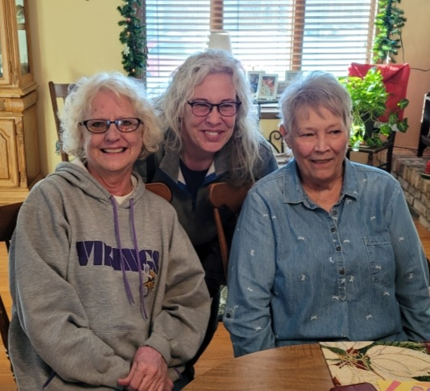

About Kelly
Kelly was born in Sioux Falls, South Dakota, she spent her early years in a carefree environment, enjoying a childhood filled with playing sports, hunting, and navigating life as a tomboy. Raised in a single-mother household, she took on responsibilities at a young age and chose to limit contact with her father as per a court order. Her grandfather, Valentine, served as a father figure until his passing when she was 13.
Life took a positive turn when she met her husband, Kevin, at a prison where he worked on the "good side." They married in 2003 at St Joseph Cathedral in Sioux Falls, a place of significance due to her past church experiences with her grandfather. Their family expanded with three children: Mason, Dalton, and Aaron, along with grandchildren Mason II and River.
A surprising and cherished addition to her life is her close friend Taylor, who initially connected with her oldest son in high school. Now, Taylor and her family are considered an integral part of her life.
Religious beliefs have played a crucial role, and she identifies as a Christian, having been born into a Catholic family. Her faith journey saw a transformation in 2009 when she started attending a United Wesleyan Methodist church, becoming an active member and engaging in various service activities within the church and the community.
Her family history involves a brother diagnosed with Legg Calf Pethes Disease, a father living in Pierre, SD, and a sister-in-law from a past marriage. Pets are also an important part of their family, with two dogs, three cats, and four chickens.
Educationally, she holds degrees in Marketing, Business Administration, and Accounting, and has passed the Real Estate and CPA exams. Her diverse career history includes roles in hospitality, technology, corrections, and more.
Looking ahead, her goals include deepening her connection with God, spreading the Good News, and achieving financial freedom.
Home Hobbies